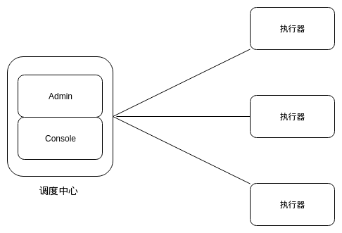
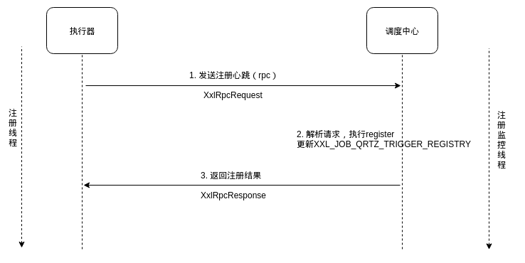
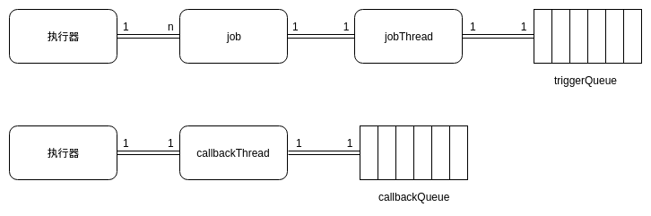
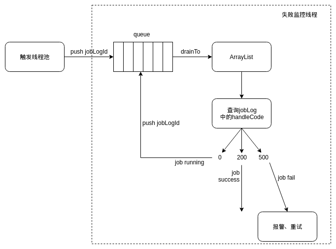

xxl-job架构分析
概览
xxl-job整体上采用中心化调度的思想，将调度和执行完全解耦。调度中心专门进行任务的调度和下发，还提供了一个web console进行可视化的管理；执行器接收执行请求，专注于业务代码的执行。

xxl-job的部署十分简单：调度中心是springboot项目，引入xxl-job-admin.jar和xxl-job-core.jar即可；执行器只需引入xxl-job-core.jar包。
注册&发现
由于xxl-job是中心化架构，每个执行器都知悉调度中心的地址，而调度中心并不能立即感知新加入或退出的执行器，因此“注册”是执行器的主动行为，“发现”是调度中心的被动行为。

执行器启动后会起一个注册线程ExecutorRegistryThread，每30s向调度中心发送注册心跳，这是个rpc调用（xxl-job提供了简单的rpc框架，其底层通信协议是http）。调度中心收到请求后解析XxlRpcRequest，校验通信accessToken，解析出执行的方法名和参数，进行反射调用执行注册操作。XXL_JOB_QRTZ_TRIGGER_REGISTRY表维护了所有注册过的执行器信息，包括执行器ip、所属AppName、注册类型、注册时间等，调度中心有个注册监控daemon线程，定期扫描这张表，删除所有注册时间在90s之前的记录，所以说REGISTRY表实际上维护了所有online执行器的信息。
任务触发
任务触发有两种方式：
- 调度触发：调度周期自动触发执行
- 手动触发：控制台手动强制触发执行
无论哪种方式，都是通过调度中心的JobTriggerPoolHelper触发线程池触发执行的。
（jobInfo在表XXL_JOB_QRTZ_TRIGGER_LOG，jobGroup在表XXL_JOB_QRTZ_TRIGGER_GROUP）
jobInfo包含jobId、路由策略、对应的业务类名称、重试次数等，jobGroup包含job对应的组（即AppName），调度中心根据路由策略确定执行器的ip地址后，封装调度请求，丢进线程池执行。
调度请求中的触发参数举例如下：
|
|
执行器收到调度请求后，解析出执行具体任务的业务类名，在此例中就是’demoJobHandler’。执行器根据类名找到执行该业务类的线程实例，如何找到？执行器在启动初始化时，扫描所有@JobHandler注解的业务类，为每个业务类创建一个专用的jobThread，然后把业务类和jobThread的对应关系记录在全局的hashmap中，这样根据类名即可找到对应线程。

我们知道，1个执行器中有n种job类型，每种job对应1个专用jobThread，这个jobThread会把执行请求push到触发队列triggerQueue中；执行器还有一个全局的回调线程callbackThread，对应一个全局的回调队列callbackQueue。jobThread每次从triggerQueue捞取任务触发请求，执行业务类（比如demoJobHandler）的execute方法执行业务代码，将执行结果push到callbackQueue中；callbackThread从队列捞取执行结果，向调度中心回调（rpc调用调度中心的callback方法）执行结果。xxl-job这样就实现了任务执行和结果返回的异步化。
路由策略
xxl-job提供了丰富的路由策略，包括第一个、最后一个、轮询、随机、一致性HASH、最不经常使用、最近最久未使用、故障转移、忙碌转移等。这里着重说明故障转移和忙碌转移。
故障转移
设置路由策略为故障转移后，调度中心在触发任务之前，会向任务对应的所有执行器循环发送探活请求，收到某执行器的OK响应后就确定将该执行器作为这次任务的执行机器。
忙碌转移
与故障转移类似，调度中心触发任务之前，向所有执行器循环发送请求，询问执行器是否忙碌，选择不忙碌的执行器作为任务的执行机器（执行器通过判断自身triggerQueue是否为空来返回是否忙碌）。
失败报警&失败重试
调度中心有一个失败监控deamon线程monitorThread，监控失败的job，其逻辑图如下。

触发线程池每次触发任务时，首先会在表XXL_JOB_QRTZ_TRIGGER_LOG中新增一条jobLog记录，即为调度日志，初始其handleCode=0；任务触发后，会把这次任务对应的jobLogId写入队列queue。失败监控线程每10s把queue中所有jobLogId取出，并写入一个ArrayList。接着从db查询jobLog信息，如果其handleCode=200（回调服务收到执行器的执行成功响应时会把handleCode更新为200，失败更新为500），说明任务执行成功；如果handleCode=0，说明还未收到回调，将jobLogId写入队列表明此job会被继续监控；如果handleCode=500，说明失败，这时就会触发失败报警，如果设置了重试，还会重新进入触发线程池重新调度执行。
日志管理
xxl-job中的日志分类两类：
- 调度日志
- 执行日志
调度日志存储在调度中心侧，对应db表为XXL_JOB_QRTZ_TRIGGER_LOG。
执行日志存储在执行器侧的日志存放路径中，执行器会有一个日志清理线程根据配置的rolling策略清理、压缩日志。
为了能够在Web Console看到执行日志，执行器开放了日志查询接口，用户点击按钮后拉取执行日志，从而在前端展示。